01 · 插画
同一片海，八种时刻
八景共享同一条潮位线与三层墨：远山雾、三层潮线、主体剪影，一景只有一个赭陶实心点。纯代码绘制，零图片、零依赖，离线也能看；画里的雾会流、潮会退、帆会晃、星会闪、灯会扫、苇会摇。





画法纪律：用一个墨色家族的三个明度，线条圆头，端点为 0.5px 对齐；装饰性插画用 ExcludeSemantics 包裹，删掉它，页面信息与操作 100% 成立。同一页最多两处，只在页头与空态，绝不进表单与答案区。
02 · 字阶
一屏一事，靠留白撑气
标题用宋，正文用黑，引文用楷。同屏计层级的只有 display / h1 / h2 / body 四档，相邻比全部 ≥1.4；注与标签不走档比，只保证读得懂。
字体全部来自系统栈：宋（Songti SC → STSong → Noto Serif SC）、黑（PingFang SC → Noto Sans SC）、楷（Kaiti SC → 霞鹜文楷）。零外链，断网可用，也不给页面加一次网络请求。
03 · 色面
三层纸 + 六色 wash
纸承载 80% 面积，墨只给主行动与结论，赭陶只做「点」：编号、印章、潮位钉、链接。六种低饱和纸色只做背景面，不做文字色。
三层纸
赭陶 · 天青 · 夯土
六科 wash
一屏的配比
纸 70–85% ／ 墨 5–15% ／ 赭 ≤5% ／ wash ≤12%。wash 只做背景面：章节标记、统计块底、成就徽章面；同屏最多两种。超配即回退。
04 · 节拍
八个节拍，只解释状态
动效只回答三件事：从哪里来、发生了什么、可以去哪。只动 opacity 与 transform；同一屏最多两组动画；尊重系统「减少动态」，为真时一步到位。
| 节拍 | 时长 | 曲线 | 用在哪 |
|---|---|---|---|
| enter | 420ms | soft-out | 页面主块入场：淡入 + 上移 8px |
| reveal | 360ms | soft-out | 次块/列表首屏，stagger 32ms 递进，最多 6 项 |
| stamp | 260ms | soft-out | 正确印章：1.45→1 缩放 + 淡入 |
| shake | 240ms | damped | 答错：±2px 三次衰减 |
| burst | 520ms | soft-out | 成就/里程碑：8 枚墨点径向散开 |
| tideDraw | 420ms | soft-out | 潮线从左画出 + 潮位钉落位 |
| numberRoll | 620ms | soft-out | 统计数字 0→值（等宽数字，读屏只报终值） |
| ambient | 8000ms | linear | 主插画潮汐相位（可关） |
禁止的事：列表滚动视差、整页背景动画、hover 里超过 2px 的位移链、动效遮挡点击区域、200ms 内连续触发两次同组动画。本网站额外加了两条：页顶潮位只读进度；所有插画动画在「减少动态」时静止。
05 · 材料
只有「抬得起来」的面才有影
纯平纸在整屏尺度上读作线框。3.0 允许有理由的深度：卡片、纸页、侧栏、面板才有影；列表行与输入框不加影；卡片里不再套卡片投影。
圆角四档
暖影三档
影色带暖墨，不用纯黑；夜里同一组影仍成立。
玻璃只给两处
玻璃只出现在外壳侧栏与命令面板（backdrop blur 22–26px + 纸色 80–94% 不透明度）。内容页不用玻璃，也不把玻璃叠在内容卡片上。
卡片的纪律
一张纸里只允许发线与 wash，不再叠第二层投影；卡片不套卡片。hover 抬升最多 4px，200ms 内完成。
06 · 世界
世界是背景，不是主角
四时四色由真实时间驱动：清晨 5–8、午后 8–17、黄昏 17–20、夜深其余。天光渐变 + 两团墨雾 + 一处暖光 + 纸纹；只在壳层与主视觉页出现，内容页仍是纸底，保住阅读对比。
删掉世界，页面仍然成立。世界不承载信息：把天光换成纸底、把雾与暖光全部关掉，页面信息与操作 100% 不变。这一条是验收里最硬的一条，也是这套设计不抢注意力的原因。